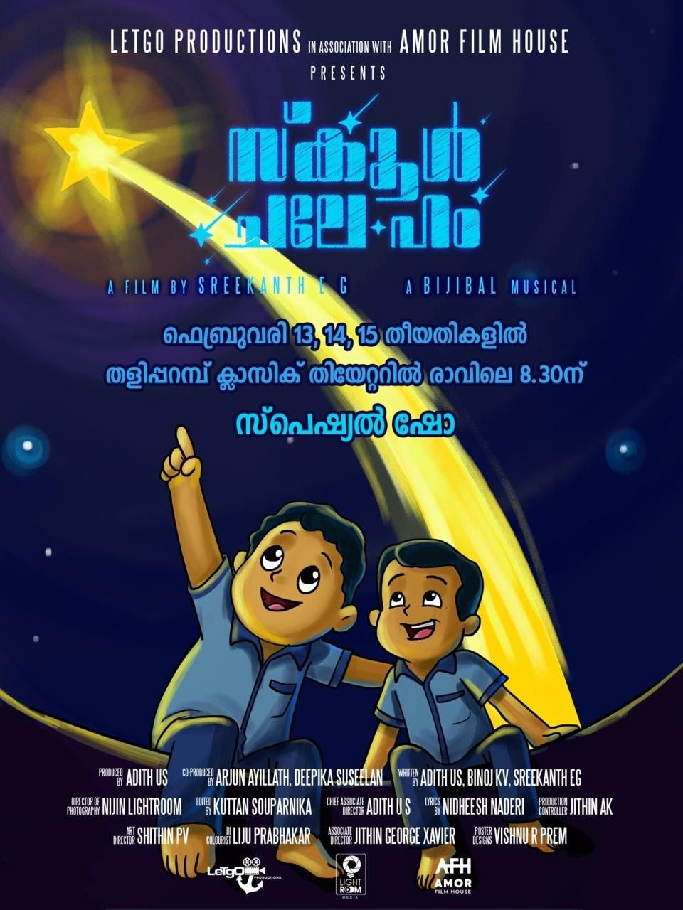
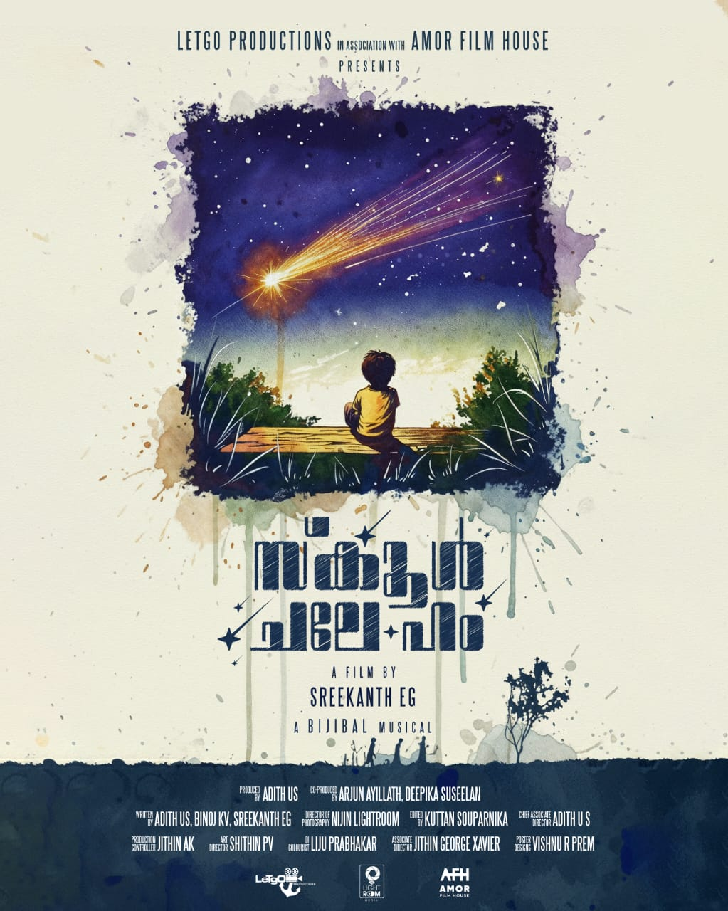

Director: ശ്രീകാന്ത് E G
Review by: ഐ എസ് സ്കറിയ
"സ്കൂൾ ചലേ ഹം" — കൊച്ചുകുട്ടികൾ പ്രധാന കഥാപാത്രങ്ങളായി തകർത്താടി അഭിനയിക്കുന്ന ഈ സിനിമ ഒരു വലിയ സിനിമ തന്നെയാണ്. അവരോടൊപ്പം അഭിനയിച്ച മോറാഴ സ്കൂൾ അധ്യാപകരും ആ സ്കൂളും ഏറെ അഭിനന്ദനം അർഹിക്കുന്നു.
ഈ സിനിമ നമ്മുടെ നാടിനെയും അടയാളപ്പെടുത്തുന്നു. സിനിമയുടെ സഹതിരക്കഥാകൃത്തായ ബിനോജ് ഇതിൽ ചെറുതെങ്കിലും ശ്രദ്ധിക്കപ്പെടുന്ന വേഷം ചെയ്തിട്ടുണ്ട്. ജനാർദ്ദനൻ പിള്ള സാറിന്റെ മകൻ അജിയും ബിജേഷും നമ്മുടെ അരങ്ങം സ്വദേശികളാണ്.
ഒരു കണ്ണാടി ഫ്രെയിമിനുള്ളിൽ രാജകീയ ശോഭയോടെ ഇരിക്കുന്ന ഒരാൾ ഉണ്ട്. അദ്ദേഹത്തിന്റെ കഥപറച്ചിലിലൂടെയാണ് സിനിമ മുന്നോട്ടു പോകുന്നത്. കഥപറച്ചിലും അഭിനയവും ഒരുപോലെ കൈകാര്യം ചെയ്യുന്ന അദ്ദേഹത്തിന്റെ പ്രകടനം ശ്രദ്ധേയമാണ്.
സിനിമയുടെ അവസാന ഭാഗത്ത് ചങ്ങാതിയെ ക്ലോസപ്പിൽ കാണിച്ചപ്പോൾ എനിക്ക് അസൂയ തോന്നാതിരുന്നില്ല — എന്തൊരു ഗ്ലാമർ ആണോ... നമ്മുടെ ഗോപിക്ക്!
🎥 സിനിമയെക്കുറിച്ച്

ഒരു കൊച്ചു സിനിമ പ്രദർശനത്തിന് എത്തുകയാണ്. ഈ വർഷത്തെ സംസ്ഥാന ഫിലിം അവാർഡിൽ അവസാന റൗണ്ട് വരെ എത്തിയ കുട്ടികളുടെ ചിത്രം. ഫിൻലാൻഡിലെ 'OLULU' ഫിലിം ഫെസ്റ്റിവലിൽ ഇന്ത്യയിൽ നിന്നും പ്രദർശിപ്പിച്ച, യുഎസിലെ ബെൽ മൗണ്ട് ഫിലിം ഫെസ്റ്റിവലിൽ ആദരം നേടിയ, JC ഡാനിയേൽ ഫൗണ്ടേഷന്റെ ഈ വർഷത്തെ മികച്ച ബാലനടനുള്ള അവാർഡ് വെള്ളിക്കീൽ സ്വദേശി മാസ്റ്റർ സുജയ് കൃഷ്ണയ്ക്ക് നേടിക്കൊടുത്ത ഞങ്ങളുടെ പ്രിയപ്പെട്ട ചലച്ചിത്രം. പേര് : 'സ്കൂൾ ചലേ ഹം'
ലെറ്റ്ഗോ പ്രൊഡക്ഷൻസിന്റെ ബാനറിൽ നിർമ്മിക്കപ്പെട്ട ഈ ചിത്രത്തിന്റെ സംവിധാനം നിർവഹിച്ചിരിക്കുന്നത് മാങ്ങാട് സ്വദേശിയായ ശ്രീകാന്ത് ഇ ജി ആണ്.
ഐതിഹ്യങ്ങളും യാഥാർത്ഥ്യവും കൂട്ടിയിണക്കിയ ഒരു മികച്ച സിനിമ ആസ്വാദന അനുഭവമാവും എന്ന് ഉറപ്പ്.
നാടകരംഗത്ത് പ്രഗൽഭനായ ഗോപി പുളിയപ്പാറയ്ക്കൊപ്പം അരങ്ങം സ്വദേശികളായ അജിരാജ് ആലപ്പുറത്ത് മഠവും വിജേഷ് തിമിരി വളപ്പിലും ഈ ചിത്രത്തിൽ അഭിനേതാക്കൾ ആയി എത്തുന്നു. മറ്റൊരു അരങ്ങം സ്വദേശിയായ ബിനോജ് കെ വി ഈ ചിത്രത്തിന്റെ തിരക്കഥാകൃത്തുക്കളിൽ ഒരാളാണ്.
നിധീഷ് നടേരിയുടെ ഗാനങ്ങൾക്ക് ഈണം പകർന്നിരിക്കുന്നത് പ്രശസ്ത സംഗീത സംവിധായകൻ ബിജിബാൽ. കളറിങ് ലിജു പ്രഭാകർ.
തളിപ്പറമ്പ് ക്ലാസിക് തിയേറ്ററിന്റെ നയന മനോഹരമായ വെള്ളിത്തിരയിൽ അടുത്ത വെള്ളിയാഴ്ച (13-Feb-2026) രാവിലെ 8.30നാണ് ആദ്യപ്രദർശനം. തുടർന്ന് ശനിയാഴ്ചയും ഞായറാഴ്ചയും രാവിലെ 8.30ന് മറ്റു പ്രദർശനങ്ങൾ. ഞങ്ങളുടെ സ്വപ്നങ്ങളാൽ നെയ്തെടുത്ത ഈ ചലച്ചിത്രത്തിന്റെ ആസ്വാദനത്തിനായി ഏവരെയും ക്ഷണിക്കുകയാണ്, ഹൃദയപൂർവ്വം.🙏🙏😍
Team SCHOOL CHALE HUM